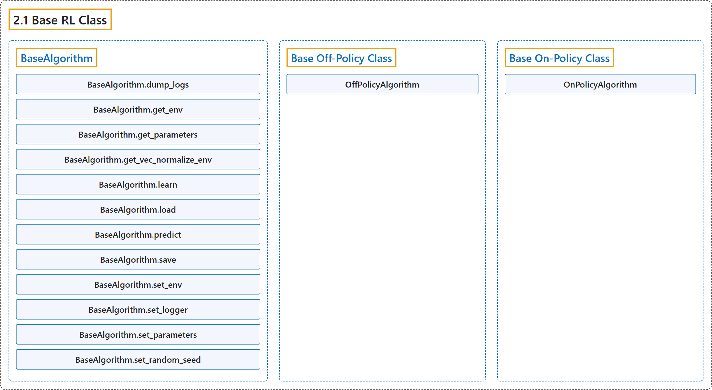

2.1 Base RL Class
Classification

Glossary
| Term | Definition | 中文翻译 | Source |
|---|---|---|---|
| 2.1 Base RL Class 强化学习基类 |
"Common interface for all the RL algorithms" | 所有强化学习算法的公共接口 | Raffin et al., n.d., "Base RL Class", para. 1 |
| BaseAlgorithm BaseAlgorithm（算法基类） |
"The base of RL algorithms" | 强化学习算法的基类 | Raffin et al., n.d., "Base RL Class", para. 1 |
| BaseAlgorithm.dump_logs dump_logs 方法 |
"Write log data. (Implemented by OffPolicyAlgorithm and OnPolicyAlgorithm)" | 写入日志数据。（由 OffPolicyAlgorithm 和 OnPolicyAlgorithm 实现） | Raffin et al., n.d., "Base RL Class", para. 1 |
| BaseAlgorithm.get_env get_env 方法 |
"Returns the current environment (can be None if not defined)." | 返回当前环境（未定义时可为 None）。 | Raffin et al., n.d., "Base RL Class", para. 1 |
| BaseAlgorithm.get_parameters get_parameters 方法 |
"Return the parameters of the agent." | 返回智能体的参数。 | Raffin et al., n.d., "Base RL Class", para. 1 |
| BaseAlgorithm.get_vec_normalize_env get_vec_normalize_env 方法 |
"Return the VecNormalize wrapper of the training env if it exists." | 如果存在，返回训练环境的 VecNormalize 包装器。 | Raffin et al., n.d., "Base RL Class", para. 1 |
| BaseAlgorithm.learn learn 方法 |
"Return a trained model." | 返回训练好的模型。 | Raffin et al., n.d., "Base RL Class", para. 1 |
| BaseAlgorithm.load load 方法 |
"Load the model from a zip-file." | 从 zip 文件加载模型。 | Raffin et al., n.d., "Base RL Class", para. 1 |
| BaseAlgorithm.predict predict 方法 |
"Get the policy action from an observation (and optional hidden state)." | 根据观测（及可选的隐藏状态）得到策略的动作。 | Raffin et al., n.d., "Base RL Class", para. 1 |
| BaseAlgorithm.save save 方法 |
"Save all the attributes of the object and the model parameters in a zip-file." | 把对象的全部属性和模型参数保存到一个 zip 文件中。 | Raffin et al., n.d., "Base RL Class", para. 1 |
| BaseAlgorithm.set_env set_env 方法 |
"Checks the validity of the environment, and if it is coherent, set it as the current environment." | 检查环境的有效性，如果一致，就把它设为当前环境。 | Raffin et al., n.d., "Base RL Class", para. 1 |
| BaseAlgorithm.set_logger set_logger 方法 |
"Setter for for logger object." | 日志记录器对象的设置方法。 | Raffin et al., n.d., "Base RL Class", para. 1 |
| BaseAlgorithm.set_parameters set_parameters 方法 |
"Load parameters from a given zip-file or a nested dictionary containing parameters for different modules (see get_parameters)." | 从给定的 zip 文件或包含各模块参数的嵌套字典加载参数（见 get_parameters）。 | Raffin et al., n.d., "Base RL Class", para. 1 |
| BaseAlgorithm.set_random_seed set_random_seed 方法 |
"Set the seed of the pseudo-random generators (python, numpy, pytorch, gym, action_space)" | 设置伪随机数生成器的种子（python、numpy、pytorch、gym、action_space） | Raffin et al., n.d., "Base RL Class", para. 1 |
| Base Off-Policy Class 离策略基类 |
"The base RL algorithm for Off-Policy algorithm (ex: SAC/TD3)" | 离策略算法的基础强化学习算法（例如 SAC/TD3） | Raffin et al., n.d., "Base Off-Policy Class", para. 1 |
| OffPolicyAlgorithm OffPolicyAlgorithm 离策略算法基类 |
"The base for Off-Policy algorithms (ex: SAC/TD3)" | 离策略算法的基类（例如 SAC/TD3） | Raffin et al., n.d., "Base Off-Policy Class", para. 1 |
| OffPolicyAlgorithm.collect_rollouts collect_rollouts 方法 |
"Collect experiences and store them into a ReplayBuffer." | 收集经验并存入 ReplayBuffer。 | Raffin et al., n.d., "Base Off-Policy Class", para. 1 |
| OffPolicyAlgorithm.dump_logs dump_logs 方法 |
"Write log data." | 写入日志数据。 | Raffin et al., n.d., "Base Off-Policy Class", para. 1 |
| OffPolicyAlgorithm.load_replay_buffer load_replay_buffer 方法 |
"Load a replay buffer from a pickle file." | 从 pickle 文件加载回放缓冲区。 | Raffin et al., n.d., "Base Off-Policy Class", para. 1 |
| OffPolicyAlgorithm.save_replay_buffer save_replay_buffer 方法 |
"Save the replay buffer as a pickle file." | 把回放缓冲区保存为 pickle 文件。 | Raffin et al., n.d., "Base Off-Policy Class", para. 1 |
| OffPolicyAlgorithm.train train 方法 |
"Sample the replay buffer and do the updates (gradient descent and update target networks)" | 从回放缓冲区采样并执行更新（梯度下降并更新目标网络） | Raffin et al., n.d., "Base Off-Policy Class", para. 1 |
| Base On-Policy Class 同策略基类 |
"The base RL algorithm for On-Policy algorithm (ex: A2C/PPO)" | 同策略算法的基础强化学习算法（例如 A2C/PPO） | Raffin et al., n.d., "Base On-Policy Class", para. 1 |
| OnPolicyAlgorithm OnPolicyAlgorithm 同策略算法基类 |
"The base for On-Policy algorithms (ex: A2C/PPO)." | 同策略算法的基类（例如 A2C/PPO）。 | Raffin et al., n.d., "Base On-Policy Class", para. 1 |
| OnPolicyAlgorithm.collect_rollouts collect_rollouts 方法 |
"Collect experiences using the current policy and fill a RolloutBuffer." | 用当前策略收集经验并填充 RolloutBuffer。 | Raffin et al., n.d., "Base On-Policy Class", para. 1 |
| OnPolicyAlgorithm.dump_logs dump_logs 方法 |
"Write log." | 写入日志。 | Raffin et al., n.d., "Base On-Policy Class", para. 1 |
| OnPolicyAlgorithm.train train 方法 |
"Consume current rollout data and update policy parameters." | 消耗当前的 rollout 数据并更新策略参数。 | Raffin et al., n.d., "Base On-Policy Class", para. 1 |
References
Raffin, A., Hill, A., Gleave, A., Kanervisto, A., Ernestus, M., & Dormann, N.. (n.d.). Base RL Class. Stable-Baselines3 docs (Version 2.9.2a0). Retrieved October 31, 2026, from https://stable-baselines3.readthedocs.io/en/master/modules/base.html